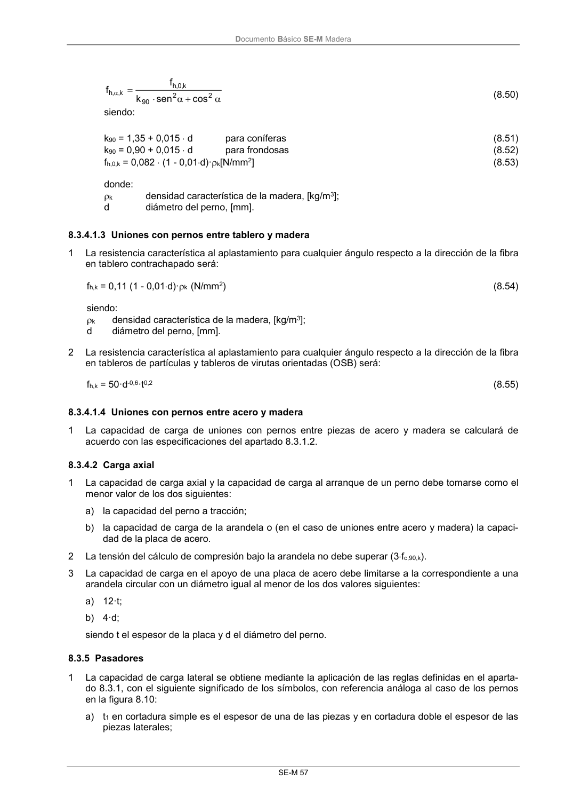

DB-SE-M Madera · edición 2019-12-20 · capa oficial
Documento DB-SE-M-oficial · SHA-256 del PDF 26b5819839ebfda78b0b119c5e76a0a37773b0d763c05688541870075df93718
Copia fiel del PDF fuente · Fuente oficial
Ficha de la disposición en la fuente oficial
Formatos: JSON del segmento · Markdown
8.3.4.1.3 Uniones con pernos entre tablero y madera 1 La resistencia característica al aplastamiento para cualquier ángulo respecto a la dirección de la fibra en tablero contrachapado será: fh,k = 0,11 (1 - 0,01d)·k (N/mm2) (8.54) siendo: k densidad característica de la madera, [kg/m3]; d diámetro del perno, [mm]. 2 La resistencia característica al aplastamiento para cualquier ángulo respecto a la dirección de la fibra en tableros de partículas y tableros de virutas orientadas (OSB) será: fh,k = 50·d-0,6·t0,2 (8.55)
